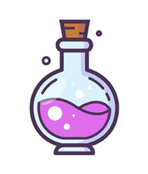
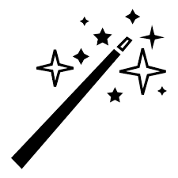

27 Magical Items
Using Magic Items
To use a magic item, it must be activated, although sometimes activation simply means putting a ring on your finger. Some items, once donned, function constantly.
Many items are activated just by using them. For instance, a character has to drink a potion, swing a sword, interpose a shield to deflect a blow in combat, wear a ring, or don a cloak. Activation of these items is generally straightforward and self-explanatory. This doesn’t mean that if you use such an item, you automatically know what it can do. You must know (or at least guess) what the item can do and then use the item in order to activate it, unless the benefit of the item comes automatically, such as from drinking a potion or swinging a sword.
If no activation method is suggested either in the magic item description or by the nature of the item, assume that a command word is needed to activate it. Command word activation means that a character speaks the word and the item activates. No other special knowledge is needed.
A command word can be a real word, but when this is the case, the holder of the item runs the risk of activating the item accidentally by speaking the word in normal conversation. More often, the command word is some seemingly nonsensical word, or a word or phrase from an ancient language no longer in common use. Note that many magic items must be held in the hand (or otherwise specially handled or worn) to be used; the risk of accidental activation is less significant for such items.
Learning the command word for an item may be easy (sometimes the word is actually inscribed on the item) or it may be difficult, requiring the services of a powerful wizard or sage, or some other means of discovery.
Only the character holding or wearing a magic item may activate it. A character who has been gagged or silenced may not activate a magic item which requires a command word.
When an article of magic armor, clothing or jewelry (including a ring) is discovered, size is not usually an issue. Such items magically adjust themselves for wearers from as small as Halflings to as large as Humans. This effect is called accommodation. The DM may create “primitive” items lacking this power if he or she wishes.
Generally only one magical item of a given type may be worn at the same time. For example, a character can normally only wear one suit of armor, wear one necklace and carry one shield at a time. In the case of rings, a character may wear one magical ring per hand. If a character wears more items of a given type than would normally be practical, the items will usually fail to function due to interference with one another; for instance, wearing two rings on the same hand normally results in both rings failing to operate. Note, however, that this limitation cannot be used to disable cursed magic items. For example, wearing a cursed ring would prevent another magic ring from being worn and used on that hand, but the curse would not be lifted by donning a second magic ring.
Magic Weapons
A magical weapon will typical have a bonus which is applied to all attack and damage rolls made with the weapon. Somme rare magic weapons are created with a variety of powers and will usually aid the wielder in combat.
Example powers
Casts Light on Command: By drawing the weapon and uttering a command word, the wielder may cause it to glow; it will then shed light with the same radius as a light spell. Sheathing or laying down the weapon, or speaking the command word again, dispels the effect. This power may be used as often as desired.
Charm Person: This power allows the wielder to cast charm person once per day, as if by an 8th level Magic-User, by brandishing the weapon, speaking a command word and gazing at the target creature. (The wielder’s gaze does not have to be met for the spell to be cast.) The target creature is allowed saving throws just as described in the spell description.
Drains Energy: A weapon with this power drains one life energy level on a hit, as described under Energy Drain in the Encounter section; up to 2d4 levels can be drained by a weapon with this power, after which time the weapon loses this power but retains any other magical effects or bonuses.
Flames on Command: Upon command, the weapon will be sheathed in fire. The fire does not harm the wielder. The effect remains until the command is given again, or until the weapon is dropped or sheathed. While it flames, all damage done by the weapon is treated as fire damage, and an additional +1 bonus (in addition to the weapon’s normal bonus) is added to damage when fighting trolls, treants, and other creatures especially vulnerable to fire. It casts light and burns just as if it were a torch.
Locate Objects: This power allows the wielder to cast the spell locate object once per day, as if by an 8th level Magic-User.
Special Enemy: These weapons are created to combat a specific sort of creature, as rolled on the Special Ability table. When used against that specific enemy, the second listed bonus applies instead of the first; so a sword +1, +3 vs. Undead would provide +1 attack and damage against giant rats, but +3 attack and damage rolls against zombies.
Wishes: Weapons with this power have the ability to grant 1d4 wishes. The DM must adjudicate all wishes, and instructions are given in the Dungeon Master section regarding this. After these wishes have been made, the weapon loses this power, but retains any other bonuses and powers.
Cursed Weapons inflict a penalty to the wielder’s attack rolls, as rolled on the Weapon Bonus table. The curse causes the afflicted character to be unable to get rid of the weapon. There are two possible forms the curse may take: Obsession and Affliction. The DM may decide which to use at his or her option.
Obsession: Regardless of how severe the penalty is, the character wielding the weapon will believe it is a bonus and refuse to use any other weapon in combat. A remove curse spell is the only way to rid a character of such a weapon; but as he or she will believe the weapon is the best magical weapon ever, the character receives a saving throw vs. Spells to resist.
Affliction: The character knows the weapon is cursed as soon as he or she uses it in combat; however, any attempt to throw it away fails, as the weapon magically appears back in the character’s hand whenever he or she tries to draw any other weapon. In this case, the remove curse spell needed to rid the character of the weapon will be unopposed (i.e. no saving throw).
Magic Armor
Magic armor (including shields) offers improved, magical protection to the wearer. In general, magic armor grants the normal Armor Class for its type, plus the magical armor bonus, as rolled on the Magic Armor table; for example, Plate Mail +2 provides an Armor Class of 19.
There are two varieties of cursed armor: Cursed Armor -1 and Cursed Armor AC 11. The first variety’s AC is reduced by the rolled penalty; for example, Plate Mail -1 grants Armor Class 16. The second type is much worse, for regardless of the type, it only provides Armor Class 11. Dexterity and shield bonuses still apply.
Cursed armor cannot be removed from the wearer once the curse is proven, that is, once the wearer is hit in combat. Once the curse has taken effect, only a remove curse spell, or some more powerful magic (such as a wish), will enable the wearer to remove it. The armor will detect as magical, like any other magic armor; the curse cannot be detected by any means other than wearing the armor in combat.
Potions
A potion is an elixir concocted with a spell-like effect that affects only the drinker. Unless otherwise noted, a potion grants its benefits for 1d6+6 turns (even if the duration of an associated spell is longer or shorter).
Almost all potions are created by Kappiyan Flurmastyr, master alchemist from Glantry. The glass bottles bear his symbol: a large circle, within which is a triangle, containing a square, within which is a circle. An additional symbol indicates the nature of the potion.

Potion Miscibility
When two potions are mixed, there is a chance for unpredictable outcomes, ranging from disastrous results to potentially enhancing the potency of one or both potions.
| Roll Range | Effect |
|---|---|
| 01 | Creates an explosion, dealing 6d10 force damage to the mixer and 1d10 force damage to each creature within 5 feet. |
| 02-03 | The mixture becomes a potion of poison. |
| 04-08 | The mixture becomes a potion of delusion that mimics one of the mixed potions’ effects. |
| 09-15 | Both potions lose their effects. |
| 16-25 | One potion loses its effect. |
| 26-35 | Both potions work, but with half their normal effects. Effects unable to be halved are lost. |
| 36-90 | Both potions work normally. |
| 91-99 | Both potions work. One potion has 150% of its normal effect or increased duration. |
| 00 | Only one potion works, and its effect is permanent. |
Alchemist’s fire
Alchemist’s fire is a concoction of volatile liquids that ignite upon exposure to air. When hurled as a splash weapon, treat it as a ranged attack with a range increment of 10 feet. A direct hit inflicts 1d6 points of fire damage.
Upon impact, every creature within 10 feet of the splash point takes 1 point of fire damage. Additionally, on the following round after a direct hit, the target sustains an additional 1d6 points of fire damage. The affected creature can use a full-round action to attempt to extinguish the flames before taking this additional damage.
Potion of Cat’s Grace
Cat’s Grace is a potent elixir that temporarily enhances Dexterity to a score of 20. While under its effects, the drinker gains the following benefits:
| Bonus Type | Bonus Amount |
|---|---|
| Ranged Attacks | +5 |
| Dragon Breath Saves | +5 |
| Dexterity-related Skills | +5 |
| Armor Class (AC) | +5 |
Potion of Clairaudience
The Clairaudience potion enables the drinker to hear sounds from another area up to 60 feet away through the ears of a living creature in that area. This effect functions similarly to the spell clairvoyance.
Potion of Clairvoyance
This potion grants the imbiber the effect of the clairvoyance spell.
Potion of Cold Resistance:
This potion grants the imbiber the power of the spell resist cold.
Potion of Control Animal
This potion functions like a control human potion, but affects only normal, non-magical animals.
Potion of Control Dragon
This potion functions like a control human potion, but affects only dragons.
Potion of Control Giant
This potion functions like a control human potion, but affects only giants.
Potion of Control Human
This potion allows the drinker to charm a human, demi-human, or humanoid by gazing at them. The effect functions like the charm person spell. If the charm is resisted, the drinker can attempt to charm up to two more targets before the potion’s benefit is exhausted.
Potion of Control Plant
This potion grants the drinker control over one or more plants or plant creatures within a 10’ square area up to 50’ away. Normal plants become animated, having a movement rate of 10’, and obey the drinker’s commands. If ordered to attack, only the largest plants can do any real harm, attacking with a +0 attack bonus and inflicting 1d4 points of damage per hit. Affected plant creatures (who fail to save vs. Spells) can understand the drinker, and behave as if under a charm monster spell.
Potion of Control Undead
This potion grants the drinker command of 3d6 hit dice of undead monsters. A save vs. Spells is allowed to resist the effect. Mindless undead follow the drinker’s commands exactly; free-willed undead act as if under a charm person spell.
Potion of Delusion:
This cursed potion will appear, if tested or analyzed, to be one of the other potions (other than poison). When imbibed, the drinker will briefly believe he has received the benefits of the “other” potion, but the illusion will be swiftly exposed…
Potion of Diminution
This potion reduces the drinker and all items worn or carried to one-twelfth of his or her original height (so that a 6’ tall character becomes 6” tall). The drinker’s weight is divided by 1,728; this makes an armed warrior weigh less than 2.5 ounces. The affected creature cannot make an effective attack against any creature bigger than a house cat, but may be able to slip under doors or into cracks and has a 90% chance of moving about undetected (both in terms of sound and vision).
Potion of ESP
This potion grants the power of the ESP spell.
Potion of Extra Healing
The imbiber of this potion receives 2d8+2 hit points of healing.
Potion of Fire Resistance
This potion grants the imbiber the power of the spell resist fire.
Potion of Flying
This spell grants the power of the spell fly.
Potion of Gaseous Form
The drinker and all of their gear become insubstantial, misty, and translucent. They become immune to non-magical weapons and have an Armor Class of 22 against magical weapons. The imbiber can’t attack or cast spells while in gaseous form and loses supernatural abilities. A gaseous creature can fly at a speed of 10 feet and can pass through small holes or narrow openings, including cracks, as long as the potion persists. However, the gaseous creature is subject to the effects of wind and cannot enter water or other liquids. Objects cannot be manipulated in this form, even those brought along when the potion was imbibed. The drinker cannot resume material form at will but must wait for the potion to expire. Alternatively, the potion may be consumed in thirds, with each dose lasting 1d4+1 turns.
Potion of Giant Strength
This potion grants the imbiber the Strength of 21. For the duration, the drinker gains a bonus of +5 on attack and damage rolls with melee or thrown weapons, and can throw large stones just as a Stone Giant) can.
Potion of Growth
The drinker of this potion (with all equipment worn or carried) becomes twice normal height and eight times normal weight. The enlarged character is treated as having the Strength of a Stone Giant (but without the rock-throwing ability), gaining +5 on attack and damage rolls.
Potion of Healing
The imbiber of this potion receives 1d6+1 hit points of healing (as the spell cure light wounds).
Potion of Heroism
This potion improves the fighting ability of the drinker. Fighters of less than 3rd level gain +3 to attack bonus as well as gaining 3 hit dice. Fighters of 4th to 5th level gain +2 to attack bonus and 2 hit dice. Fighters of 6th or 7th level gain +1 to attack bonus and 1 hit die. Fighters of 8th level or higher, as well as non-Fighter class characters, gain no hit dice, but still receive +1 to attack bonus. Hit dice gained are only temporary, and damage received is deducted from those hit dice first; any that remain when the potion expires are simply lost.
Potion of Invisibility
This potion makes the imbiber invisible (as the spell). This potion may be quaffed in thirds, in which case each drink lasts 1d4+1 turns.
Potion of Invulnerability
This potion grants a bonus of +2 to Armor Class.
Keoghtom’s Ointment
This glass jar, 3 inches in diameter, contains 1d4 + 1 doses of a thick mixture that smells faintly of aloe. As an action, one dose of the ointment can be swallowed or applied to the skin. The creature that receives it regains 2d8 + 2 hit points, ceases to be poisoned, and is cured of any disease. The ointment will remove scars and reattach knocked out teeth.
Potion of Levitation
This potion grants the power of the spell levitate.
Potion of Longevity
The drinker of this potion becomes younger by 1d10 years.
Poison
This isn’t a potion at all, it’s a trap. The drinker must save vs. Poison or die, even if only a sip was imbibed.
Potion of Polymorph Self
This potion grants the power of polymorph self spell.
Potion of Speed
This potion gives the drinker the benefits of the spell haste.
Potion of Total Healing
The imbiber of this potion is fully restored all hit points lost.
Potion of Treasure Finding
The imbiber of this potion will immediately know the direction and approximate distance to the largest treasure hoard in a 300’ spherical radius. This potion specifically detects platinum, gold, electrum, silver, and copper; gemstones and magic items are not detected.
Potion of Water Breathing
The imbiber breathes underwater as though it was air for 1d6+6 turns.
Scrolls
Most scrolls contain some sort of magic, which is activated when read, and may only be used once; the characters burn away as the words are read. Spell Scrolls are enchanted with either Cleric (divine) or Magic-User (arcane) spells. Each spell can be used just once, as a scroll immediately disintegrates once it is used.
Only a Cleric can use a Clerical scroll, and only a Magic-User can use a Magic-User scroll. The exception to this rule is the thief who, starting at 4th level, has a chance to use an arcane scroll.
Magic-User scrolls are written in Arcane. If a Magic-User attempts to cast a spell from a scroll that is a higher level than what the Magic-User can cast, a DC check must be made. Roll DC 10 + Int and subtract 2 for each spell level of difference.
A Magic-User may only transcribe a spell from a scroll or another individual’s spellbook prior to it being used. To copy a spell, the character must spend 1d4 hours per spell level. The chance of successfully transcribing a spell is DC 14 + Int, +1 per level of the Magic-User, -2 per level of the spell. Any failure requires another Magic-User who knows the spell to teach it.
Clerical scrolls are written in a normal language (being just specially enchanted prayers). If a Cleric attempts to cast a spell from a scroll that is a higher level than what the Cleric can cast, a DC check must be made. Roll DC 10 + Wis and subtract 2 for each spell level of difference.
Cursed Scroll
A cursed scroll inflicts some curse upon whoever reads it. It need not be read completely; in fact, merely glancing at the text is enough to inflict the curse. A saving throw may or may not be allowed, as determined by the DM (though a save vs. Spells should usually be allowed). The DM is encouraged to be creative when creating curses; the spell bestow curse (the reverse of remove curse) can be used for inspiration, but cursed scrolls can contain more powerful or inventive curses at the DM’s discretion.
Protection Scrolls
Protection Scrolls can be read by any character class, assuming the character can read the language the scroll is written in (see the notes under Language in the Character section for details). When read, a protection scroll creates a 10’ radius protective circle around the reader; preventing the warded creatures from entering. The circle moves with the reader. Any creature other than the sort the scroll wards may enter, including of course the allies of the scroll-reader, who are themselves protected so long as they remain entirely within the circle. If any creature within the circle performs a melee attack against any of the warded creatures, the circle is broken and the warded creatures may freely attack. Normal protection scrolls last for 2 turns after being read.
Protection from Magic
Protection from Magic scrolls are special, as they protect against magic spells and items rather than creatures. No magical effect can cross the 10’ circle of protection in either direction for 1d4 turns. As with the other protection scrolls, the circle created by this scroll moves with the reader.
Treasure Maps
Treasure Maps are generally non-magical. They must be created by the DM, although he or she may delay creating the map until the characters can actually use it. The treasure indicated on the map will normally be guarded by some sort of monster, determined by the DM as desired.
Rings
A ring is a circular metal band worn on the finger (no more than one ring per hand) that has a spell-like power (often a constant effect that affects the wearer).
Ring of Control Animal
The wearer of this ring can charm up to 6 hit dice of animals. The effect works much like a charm person spell, but only affects animals (including giant-sized animals, but excluding fantastic creatures as well as anything more intelligent than a dog or cat). The wearer can activate the power at will, targeting any animal within 60’ that he or she can see. The wearer may choose to end the effect for one or more controlled creatures at any time, in order to “free” enough hit dice to control a new target.
Ring of Control Human
The wearer of this ring may cast the spell charm person at any target he or she can see within 60’. The wearer can use this power once per round, at will, but cannot control more than 6 hit dice of creatures at a time; however, the wearer may choose to end the effect for one or more controlled creatures at any time, in order to “free” enough hit dice to control a new target.
Ring of Control Plant
The wearer of this ring may create an effect equivalent to a potion of plant control) at will, affecting plants or plant creatures within 60’ that he or she can see. The effect lasts as long as the wearer remains within 60’ of the plants or plant creatures. A saving throw is allowed just as for the potion.
Ring of Delusion
This ring appears to be some other sort of ring (roll on the rings table to determine what sort). Whoever wears it believes it is working, and behaves thus (so a character who believes he is wearing a ring of invisibility will believe himself to actually be invisible). Unlike the potion of the same name, the ring’s effect is not dispelled by the wearer taking damage; in fact, the only way to rid a character of this cursed item is with the spell remove curse.
Ring of Djinni Summoning
This ring serves as a special gate by means of which a specific djinni can be called from the Elemental Plane of Air. When the ring is rubbed, the djinni appears on the next round. The djinni faithfully obeys and serves the wearer of the ring, but never for more than 1 hour per day. If the djinni of the ring is ever killed, the ring becomes non-magical and worthless.
Ring of Eibon
The wearer can spend 3 charges to Misty Step.
The ring is made of an amber gold and set with a large purple gem, somber and smoldering, of which the like is not easily found in the OnceWas.
Ring of Fire Resistance
The wearer of this ring receives protection as the spell resist fire, but the protection works continually.
Ring of Free Action
This ring enables the wearer to move and attack freely and normally even when attacked by a web, hold, or slow spell, or even while under water. The spells simply have no effect. While under water, the individual moves at normal (surface) speed and does full damage even with cutting weapons (like axes and scimitars) and with smashing weapons (like flails, hammers, and maces), insofar as the weapon used is held rather than hurled. This will not, however, enable breathing under water without further appropriate magic.
Ring of Invisibility
By activating this simple silver ring, the wearer becomes invisible, vanishing from sight, including Darkvision. Items dropped or put down by an invisible creature become visible; items picked up disappear if tucked into the clothing or pouches worn by the creature.
Light, however, never becomes invisible, although a source of light can become so (thus, the effect is that of a light with no visible source). Any part of an item that the subject carries but that extends more than 10 feet from it becomes visible. Of course, the subject is not magically silenced, and certain other conditions can render the recipient detectable (such as stepping in a puddle).
If the invisibility is dispelled if the wearer attacks any creature or casts any spell. Actions (other than spell casting) directed at unattended objects do not break the spell. Causing harm indirectly is not an attack. Once dispelled, the ring may not be reactivated for one full turn.
Ring of Protection
This ring offers continual magical protection in the form of a bonus to the Armor Class of the wearer (varying from +1 to +3). This bonus is also applied to the wearer’s saving throw die rolls.
Ring of Regeneration
This ring grants the wearer the power of regeneration, exactly as described in the description of the troll, including the weakness with respect to acid and fire damage. However, only damage taken while wearing the ring is regenerated.
Ring of Second Chances
This diamond ring with a platinum band allows (once per day) the user to reroll any dice roll and keep the higher roll.
Ring of Shooting Stars
This gold ring generally has 2d10 charges. 1 to 3 charges can be expended as an action. For every charge expended, a glowing mote of light is launched from the ring at a visible target at a point you within 60 feet. Each creature within a 15-foot cube originating from that point is showered in sparks for 5d4 fire damage on a failed save, or half as much damage on a successful one.
Ring of Spell Storing
A ring of spell storing contains a number of spells (either divine or arcane) that any wearer can cast. Each spell has a caster level equal to the minimum level needed to cast that spell. Any class may wear and use this ring, but it can only be recharged by a spell caster casting the appropriate spell into it.
A table is provided below to determine how many spells, and what levels they are. A ring of spell storing must be recharged with the same spells that were placed into it when it was made; so a ring of two spell storing containing fireball and fly can only be recharged with those two spells. The ring magically imparts to the wearer the names of all spells stored within it.
A ring found in a treasure hoard may be completely charged, or discharged, or partially charged, at the DM’s option.
| d% | # of Spells | d% | Level of Spell |
|---|---|---|---|
| 01-24 | 1 | 01-30 | 1st |
| 25-48 | 2 | 31-55 | 2nd |
| 49-67 | 3 | 56-75 | 3rd |
| 68-81 | 4 | 76-85 | 4th |
| 82-91 | 5 | 86-97 | 5th |
| 92-96 | 6 | 98-00 | 6th |
| 97-00 | 7 |
Ring of Spell Turning
This ring reflects spells cast directly at the wearer, but not area effect spells, back at the caster; so a hold person spell would be reflected, but not a fireball. It will reflect up to 2d10 spells levels before its power is exhausted.
Ring of Telekinesis
The wearer of this ring can move objects or creatures by concentration alone. An object weighing no more than 600 pounds can be moved up to 20 feet per round. A creature can negate the effect on itself or an object it holds or has on its body with a successful save vs. Death Ray.
In order to use this power, the caster must maintain concentration, moving no more than normal movement (no running), making no attacks and casting no spells. If concentration is lost (whether intentional or not), the power may be used again on the next round, but the subject of the effect is allowed a new saving throw.
The effect may be used as many times per day as the wearer wishes, but lasts only as long as the wearer concentrates on it.
Ring of Water Walking
This ring allows the wearer to walk on any liquid as if it were firm ground. Mud, oil, snow, quicksand, running water, ice, and even lava can be traversed easily, since the wearer’s feet hover an inch or two above the surface. Molten lava will still cause the wearer damage from the heat since he or she is still near it. The wearer can walk, run, or otherwise move across the surface as if it were normal ground.
Ring of Weakness
Whoever puts this ring on is cursed; his or her Strength score is reduced immediately to 3. The ring can only be removed with remove curse.
Ring of Wishes
A ring of wishes contains the power to grant wishes to the wearer. 1d4 wishes will remain within the ring when it is found. The DM must adjudicate all wishes, and instructions are given in the Dungeon Master section regarding this.
Ring of X-Ray Vision
On command, this ring gives its possessor the ability to see into and through solid matter. Vision range is 20 feet, with the viewer seeing as if he were looking at something in normal light even if there is no illumination. X-ray vision can penetrate 1 foot of stone, 1 inch of common metal, or up to 3 feet of wood or dirt. Thicker substances or a thin sheet of lead or gold blocks the vision. The ring may be used three times per day, and each use lasts at most one turn (or until the wearer ceases to concentrate upon it).

Wands, Staves and Rods
Wands A wand is a short stick, generally 12 to 18 inches long, imbued with the power to cast a specific spell or spell-like effect. A newly created wand has 20 charges, and each use of the wand depletes one of those charges. A wand found in a treasure hoard will have 2d10 charges remaining. If a wand generates an effect equivalent to a spell, assume the spell functions as if cast by a 6th level caster, or the lowest level caster who could cast that spell (whichever is higher), unless otherwise noted. Wands are generally usable only by Magic-Users. Saving throws are rolled as normal but use the Magic Wands column rather than the Spells column.
Staves A staff has a number of different (but often related) spell effects. A newly created staff has 30 charges, and each use of the staff depletes one or more of those charges. A staff found in a treasure hoard will have 3d10 charges remaining. Spell effects generated by a staff operate at 8th level, or the lowest caster level the spell could be cast by, whichever is higher, unless otherwise stated. Staves are usable only by Magic-Users, except where noted. Saving throws against magic from a staff are rolled on the Spells column.
Rods A rod is a scepter-like item with a special power unlike that of any known spell. Rods are normally usable by any class.
Rod of Cancellation
This dreaded rod is a bane to magic items, for its touch drains an item of all magical properties. If the item is held by a creature, an attack roll is needed to touch it. Upon draining an item, the rod itself becomes brittle and cannot be used again. Drained items are only restorable by a wish.
Snake Staff
This item is a walking staff +1. When used by a Cleric, the user may command the staff to transform into a constrictor snake (instead of causing damage) on a successful hit. The snake will wrap around a target up to man-sized and hold them fast for 1d4 turns, unless a save vs. Spells is made. The snake does not attack in any other way, nor cause any damage. The snake may be recalled by the user at any point, in which case it returns to their hand and reverts to staff form. It also returns in this way when the duration expires, or if the save is made. The snake has Armor Class 15, moves 20’ per round, and has 20 hit points; any hit points of damage taken are healed completely when the snake returns to staff form. If killed in snake form, the magic is destroyed and it turns into a broken stick. The staff may be used any number of times per day and neither has nor uses charges.
Staff of Commanding
This staff can cast charm person and charm monster spells, and can grant a power equivalent to a potion of control plant. Each function uses one charge.
Staff of Healing
This staff can heal 1d6+1 hit points per charge expended, as the spell cure light wounds. Alternately, with an expenditure of two charges, the staff can cast cure disease. This staff is only usable by a Cleric.
Staff of Life
The staff is made of white oak and carved to resemble braided bands of holly and oak boughs, twisted around a unicorn’s horn at the end. It has 7 charges. Only a Cleric or Paladin can only wield this staff.
Heal Spell (per 1 charge)
Heal enables the caster to wipe away injury and afflictions. It immediately ends any and all of the following adverse conditions affecting the target: ability damage, blindness, confusion, deafness, disease, exhaustion or fatigue, feeblemind, insanity, nausea, and poison. It also restores all but 1d4 of the target’s hit points. Heal does not remove negative levels or restore permanently drained ability score points.
Resurrection (per 5 charges)
This restores life to a deceased creature. A creature can be raised that has been dead for no longer than 6 months. The full body is not required; only a small portion is required, but that portion must have been part of the subject’s body at the time of death. (The dust left from a disintegrate spell counts as the required small portion.) A whole new body is created, so it will be at the peak of health, with full hit points, and all spells prepared at the time of death.
This is still an ordeal, however. The subject of the spell loses one level (or 1 hit die) when it is resurrected, permanently (i.e. it does not accrue a negative level, but rather loses an actual level, being reduced to the minimum number of experience points required for the previous level). If the subject is 1st level, it loses 1 point of Constitution instead (if this would reduce its Constitution to 0 or less, it can’t be raised). This level, hit dice, or Constitution loss cannot be repaired by any means, though of course the character may gain levels and hit dice in the normal fashion.
A creature which has become undead can be resurrected as long as the undead creature has been destroyed. Constructs and elementals cannot be resurrected.
This item cannot bring back a creature that has died of old age.
Staff of Power
This is a very potent magic item, with offensive and defensive abilities. It is usually topped with a glistening gem, its shaft straight and smooth. It has the following powers costing one charge per use: lightning bolt(6d6 damage), fireball (6d6 damage), cone of cold (as the wand, for 6d6 damage), continual light, and telekinesis (as the ring, lasting at most 1d6 turns). The staff is also a +2 walking staff, and can be used exactly as a staff of striking.
A staff of power can be used for a retributive strike, requiring it to be broken by its wielder. All charges currently in the staff are instantly released in a 30’ radius, doing 1d6 damage per charge remaining (save vs. Spells for half damage). All within the area, including the wielder, are affected by this.
After all charges are used up from the staff, it remains a +2 walking staff. Once empty of charges, it cannot be used for a retributive strike.
Staff of Storm Clouds
This wooden staff is carved with the images of rolling thunderclouds. It emits the smell of ozone, and while holding it, you can hear the faint rumble of distant storm clouds within.
Gust of Wind (1 charge) Range: 10 ft. x 50 yds, Duration: 5 rounds The force of this gust of wind (about 30 m.p.h.) is sufficient to extinguish candles, torches, and similar unprotected flames. It causes protected flames—such as those of lanterns—to dance wildly and has a 25% chance to extinguish even such lights. It also fans large fires outward 1d6 feet in the direction of the wind’s movement. It forces back small flying creatures 1d6 x 10 yards and causes man-sized beings to be held motionless if attempting to move against its force. It slows larger-than-man-sized flying creatures by 50% for one round. It blows over light objects, disperses most vapors, and forces away gaseous or unsecured levitating creatures. Its path is a constant 10 feet wide, by 10 yards long per level of experience of the caster (for example, an 8th-level magic-user causes a gust of wind that travels 80 yards).
Forked Lightning (2 charges) Range: 50 feet Three arcs of electricity spring from the staff to strike separate targets within 20 feet of each other. For each bolt, the wielder must roll to hit their chosen target, ignoring any worn armor; metal-armored targets get a +4 bonus to hit (any magical bonuses still apply). Inanimate objects cannot be damaged by this spell. Each bolt deals 1d6 + 2 points of electricity damage. If there are fewer than the maximum allowed targets, then the extra bolts do not appear and are wasted; a single bolt can only strike a single creature. There is no save to resist the spell once struck by a bolt, but creatures with any sort of resistance to electrical attacks will suffer no damage whatsoever.
Thunderstrike (3 charges) Range: 150 feet, Duration: 5 rounds The wielder calls down a 5-foot wide, 30-foot long vertical bolt of lightning that deals 3d6 points of electricity damage. The bolt of lightning flashes down in a vertical stroke at whichever target point the caster chooses within the spell’s range (measured from the caster’s position at the time of casting). Any creature in the target area or in the path of the bolt is affected; a successful save vs. Spells reduces damage taken by half. All within a 60-foot area must make a second save against paralyzation or be deafened for 1d6 turns.
Ice Storm (4 charges) Range: 450 feet, Duration: 1 round The staff causes great magical hailstones to pound down for 1 full round, dealing 5d6 points of damage to every creature in a 30-foot radius around the target spot; a successful save vs. Spells will reduce damage by half. The ice storm fills a vertical volume of 40 feet, so creatures higher than that distance above the target spot are unaffected. A -20% penalty applies to each Listen roll made within the ice storm’s effect, and all land movement within its area is at half speed. At the end of the duration, the hail disappears, leaving no aftereffects (other than the damage dealt). Any creature naturally resistant to cold takes half damage (or one-quarter damage if it makes its save).
Staff of Striking:
This staff has no attack bonus, but is treated as a +1 weapon with respect to what sorts of monsters it can hit (and is usable by any class in that mode). This staff’s primary power may only be used if wielded by a Cleric: By uttering a command word, the Cleric may create an effect similar to the spell striking. Expenditure of one charge adds 1d6 damage to the weapon’s next strike; expenditure of two charges adds 2d6, and expenditure of three charges adds 3d6 damage. If the weapon is not successfully used after the command word has been spoken, the effect dissipates after one turn.
Staff of Traveling and Leaping
This staff increases the wearer’s base land speed by an additional 10’ per round. In addition to this traveling ability, the staff allows the bearer to make great leaps, jumping up to 10’ high and/or 30’ across.
Staff of Withering
The staff functioned as a +2 quarterstaff. On a successful hit a charge can be expended to deal 2d10 +2 necrotic damage to the target. In addition, the target ages 10 years (save versus Wands for half).
Staff of Wizardry
This staff is equivalent to the Staff of Power, above, and has the following powers as well: invisibility, passwall, web, and conjure elementals These powers each use one charge when activated.
Quarterstaff of the Abbot
This staff appears as a normal, unadorned wooden quarterstaff +1, but when the weapon is used in combat, it endows its possessor with one of the following attacks or feats:
Sunder - On a successful hit, a man-sized opponent must save versus a DC 14 + Dexterity or have their non-magical weapon destroyed.
Trip - On a successful hit, a man-sized opponent must save versus a DC 14 + Dexterity or be tripped.
Disarm - On a successful hit, a man-sized opponent must save versus a DC 14 + Dexterity or be disarmed.
Improved Parry and Dodge - This is a defensive action instead of an attack that gives a +3 bonus to AC.
Wand of Cold
This wand generates a conical blast of cold doing 6d8 damage (save vs. Magic Wands for half damage). The cone spreads from the tip of the wand to a width of 30’ at a distance of 40’ away.
Wand of Enemy Detection
The effect of this wand is to make all enemies of the user within 60’ glow with a greenish white light for one round. Even hidden or invisible enemies glow in this way, revealing them, but enemies completely out of sight (such as behind a wall) may not be seen by the user. An “enemy” is any creature which is thinking of or otherwise intending to harm the user; also, all undead monsters and animated constructs within range will glow in this way regardless of intent or thoughts (or lack thereof).
Wand of Fear
This wand generates the effect of the spell cause fear (the reverse of the spell remove fear).
Wand of Fireballs
This wand generates fireball’s, exactly as the spell, doing 6d6 damage.
Wand of Illusion
This wand allows the user to create illusions equivalent to the spell phantasmal force.
Wand of Lightning Bolts
This wand generates lightning bolts, exactly as the spell, doing 6d6 damage.
Wand of Magic Detection
This wand grants the user a power equivalent to the spell detect magic.
Wand of Paralyzation
This wand creates the effect of the spell hold person.
Wand of Polymorph
This wand can be used to cast either polymorph self or polymorph other.
Wand of Secret Door Detection
This wand grants the user a power similar to the spell find traps, but which reveals secret doors rather than traps.
Wand of Trap Detection
This wand grants the user a power equivalent to the spell find traps.
Wand of Viscid Globs
This metallic baton works with a command word (“Híw”—Elven for sticky) and may be used by any class. The wand shoots bright greenish goo that covers a 5 ft area. (Save vs. Wands)
Effect: The goo hardens rapidly when it comes into contact with air. If it splashes over a creature, it can effectively glue that being to the ground. If cast upon a flying creature, it hardens around the wings and prevents flight. The goo does not harden underwater; it requires contact with air. It does not cause those caught within it to suffocate.
Strength: The adhesive is so strong that a creature could break their joints before the bonds, causing less intelligent creatures to possibly destroy themselves in their attempt to free themselves.
Duration: The hardened goo eventually becomes brittle in 2d6 turns and cracks apart. The substance can also be dissolved by alcohol, such as that in wine.
Weakness: This drow wand is destroyed if exposed to sunlight for an hour.
Miscellaneous Items
These items may take any of several forms, and have a variety of effects; when randomly rolled, the effect is determined first (as explained with the tables above) and then the form is rolled on a separate table. Generally, such an item is written as a [Form] of [Effect], for example, a Cloak of Fire Resistance.
Items with forms meant to be worn are limited in that only a normal number may be used at one time: at most two rings (one on each hand), one cloak, a pair of boots, one helm, and one pendant. If a character is wearing two items that grant the same continuous effect, such as Cold Resistance or Protection, only one such item will function. If the items have differing levels of effect, such as a Cloak of Protection +1 and a Ring of Protection +3, only the more powerful item will operate (in this case, the ring).
While the tables on page 167 provide standard forms for miscellaneous items, the Dungeon Master is in no way limited to what appears on the Form of Item table; items may be created with forms not normally allowed there, or indeed even in forms that are not there at all.
Miscellaneous Item Effects
Blasting: When this device is played (as appropriate for its form), it creates a powerful blast of sound filling a cone 10’ long and 2’ wide at the base. Those within the area of effect suffer 2d6 points of damage and are deafened for 1 full turn. A successful saving throw vs. Death Ray reduces damage by half and reduces the period of deafness to a single round.
The device can also be used to damage or destroy buildings, fortifications, etc. Double the damage listed above when this item is used against a structure. The Stronghold rules in the Dungeon Master section contains further guidance on this.
Blending: The wearer of this item becomes nearly invisible, granting an 80% chance that the wearer can move about unnoticed. If detected by onlookers, the wearer can be attacked without significant penalty.
Cold Resistance: The wearer of this device receives protection as the spell resist cold, but the protection works continually.
Comprehension: The wearer of this device is granted the ability to read any language, including any form of magical script. Being able to read magic does not confer magical abilities upon the wearer, but if worn by a magic-user it grants the effects of read magic constantly. Note that when reading non-magical texts, the limitations described under the spell read languages apply to this device also.
Control Animal: The wearer of this device can charm up to 6 hit dice of animals. The effect works much like a charm person spell, but only affects animals (including giant-sized animals, but excluding fantastic creatures as well as anything more intelligent than a dog or cat). The wearer can activate the power at will, targeting any animal within 60’ that they can see. The wearer may choose to end the effect for one or more controlled creatures at any time, in order to “free” enough hit dice to control a new target.
Control Human: The wearer of this device may cast the spell charm person at any target they can see within 60’. The wearer can use this power once per round, at will. If more than one humanoid is to be affected, the wearer cannot control more than 6 hit dice or levels of humanoids at a time; however, the wearer may choose to end the effect for one or more controlled creatures at any time, in order to “free” enough hit dice or levels to control a new target.
Control Plant: The wearer of this device may create an effect equivalent to a Potion of Plant Control at will, affecting plants or plant creatures within 60’ that they can see. The effect lasts as long as the wearer remains within 60’ of the plants or plant creatures. A saving throw is allowed just as for the potion.
Courage: When this device is played, all characters and creatures friendly to the user within 60 feet are affected as by the spell remove fear.
Deception: This device grants to the wearer the power of the Deceiver (as described on page 75). Any attacker will believe the wearer is 3 feet from their true location, and the attacker’s first strike will always miss. Thereafter, the attacker suffers a penalty of -2 on all attack rolls. This ring does not affect mindless creatures, constructs such as golems or living statues, or any sort of undead. Living creatures which are not mindless will be affected even if they do not use sight to target the wearer.
Delusion: Whoever wears this device believes it is some other form of useful magical device, and behaves thus (so for example, if Evron believes he is wearing a Ring of Invisibility he will believe himself to actually be invisible). Unlike the potion of the same name, the device’s effect is not dispelled by the wearer suffering damage; in fact, the only way to rid a character of this cursed item is with the spell remove curse.
Djinni Summoning: Each device of this type has a specific djinni bound to it, which will be summoned to the wearer’s location when they rub the device while wearing it. The djinni appears in the next round and protects, serves, and obeys the wearer. The djinni will serve at most 1 hour per day, and can be summoned at most once per day. If the djinni bound to a device is ever slain, the ring loses all magical properties.
Doom: When this device is played (as appropriate for its form), this device will create animated skeletons or zombies as if by the spell animate dead. Up to 3d6 hit dice of undead monsters will be so created from remains within a 60’ radius of the character who activated the device. If both skeletal and fleshy remains are available in the area of effect, skeletons will be animated in preference over zombies. If the user is a magic-user or cleric, the created undead may be controlled so long as that character retains the device. If played by a fighter or thief, the undead created will be uncontrolled, and will attack any living creatures nearby. The device may be used once per day, but no more than 18 hit dice of undead created by it may exist at any one time.
Fire Resistance: The wearer of this device receives protection as the spell resist fire, but the protection works continually.
Invisibility: The wearer of this device can become invisible (as the spell invisibility) on command. If the invisibility is dispelled (as described for the spell), the device may not be reactivated for one full turn. The invisibility effect otherwise lasts for 24 hours. Levitation: The wearer of this device may levitate (as the spell) at will by concentrating. There is no limit to how long this device may be used.
Mind Reading: Whoever wears this device has access to a permanent form of the spell mind reading; it is always available but only activates when the wearer spends a full round concentrating upon it, and persists until the wearer ceases to use it. The effect can be activated as many times per day as the wearer wants.
Panic: When this device is played (as appropriate for its form), all creatures more than 20 feet from the user but not over 120 feet away must save vs. Spells or be affected as by the spell cause fear.
Penetrating Vision: On command, and for so long thereafter that the wearer concentrates on it, this device confers the power to see through solid matter as if it were transparent as glass. The effect extends at most 20 feet, and the wearer sees as if in normal light even if they are in fact in total darkness.
This effect is blocked by certain materials; the wearer can see through at most 3 feet of wood or soil, 1 foot of stone, or 1 inch of most metals. Gold or lead no thicker than foil will completely block the effect.
The device may be used three times per day, and each use lasts at most one turn.
Protection: The wearer of an item with this power receives the listed benefit (from +1 to +3) to their Armor Class for so long as the ring is worn. This bonus is also applied to the wearer’s saving throw die rolls.
Protection from Energy Drain: This device has the power to absorb and neutralize energy-draining attacks, death spells or effects (such as slay living), and curses that would otherwise affect the wearer. The device has 2d6 charges when found, and each negative level, curse, or spell absorbed consumes one charge. When the device’s charges are exhausted it disintegrates into golden sparkles and disappears.
Protection from Scrying: The wearer of this item is immune to all forms of scrying (including crystal balls, clairvoyance, clairaudience, and any other means of location or spying at a distance) as well as any form of mind reading. Other characters who are within 30’ of the wearer are also immune to scrying, but not to mind reading
Regeneration: This device grants the wearer the power of regeneration, exactly as described in the description of the Troll on page 151, including the weakness with respect to acid and fire damage. Note that this device will only heal damage suffered while it is worn; pre-existing damage is not healed by putting on the device.
Scrying: This device can be used to spy upon other people or locations, regardless of distance. A scrying device may only be used by Magic-Users. It can be used three times per day, for up to a turn each time. The chance of success when using a scrying device is as shown below. Total chances equal to or greater than 100% do not require a roll.
| Knowledge and Connection | Chance |
|---|---|
| Secondhand Knowledge (heard of) | 25% |
| Firsthand Knowledge (seen briefly) | 55% |
| Familiar (known well) | 95% |
| Possession or garment | +25% |
| Body part, lock of hair, bit of nail, etc. | +50% |
The user of the device is the only one who will see the image. No sound will be heard normally. Detect magic, detect evil, and mind reading have a 3% chance per level of the caster of operating correctly if used with a scrying device.
Scrying, Superior: This item works exactly like a standard scrying device, as described above, but also allows the user to hear any sounds in the location viewed as if they were there.
Speed: The wearer of this device can activate it with a command word (or by clicking their heels together, if the item takes the form of boots) and gain the effect of a haste spell, and can end the effect the same way. The effect can be used for a total of 10 rounds each day.
Spell Storing: These much sought-after devices each contain a number of spells which can be cast by the wearer. Most of them contain Magic-User spells, but 1 in 10 contains Clerical spells instead. No device may contain spells of both types! Each spell stored in the device is cast as if by the lowest-level character who could normally cast the spell, but not less than 6th level in any case.
Any class may wear and use this device, but it can only be recharged by casting the appropriate spell into it. A table is provided below to determine how many spells, and what levels they are. A spell storing device must be recharged with the same spells that were placed into it when it was made; so a Pendant of Two Spell Storing containing fireball and fly can only be recharged with those two spells.
The wearer of one of these devices automatically knows the names of the spells stored within it, but is not granted detailed knowledge of how each spell works. If the wearer is not a magic-user and no such character is available to advise the wearer, there may be some difficulty in using it successfully (and safely).
A device of this type found in a treasure hoard may be completely charged, or discharged, or partially charged, at the DM’s option.
| d% | no of Spells | d% | Level of Spell |
|---|---|---|---|
| 01-24 | 1 | 01-30 | 1st |
| 25-48 | 2 | 31-55 | 2nd |
| 49-67 | 3 | 56-75 | 3rd |
| 68-81 | 4 | 76-85 | 4th |
| 82-91 | 5 | 86-97 | 5th |
| 92-96 | 6 | 98-00 | 6th |
| 97-00 | 7 |
Spell Turning: This device reflects spells cast directly at the wearer, but not area effect spells, back at the caster; so a hold person spell would be reflected, but not a fireball. It will reflect up to 2d6 spells before its power is exhausted.
Stealth: The wearer of this device can move quietly in virtually any surroundings, granting a 90% chance of success when moving silently (as the Thief ability of the same name).
Telekinesis: The wearer of this device can use the power of the spell telekinesis, as if cast by a 12th level Magic-User. The effect may be used as many times per day as the wearer wishes, but lasts only as long as the wearer concentrates on it.
Telepathy: Three times per day this item can be activated by use of its command word, at which point it will grant the wearer the power of a special version of the mind reading spell which has a range of 90 feet and lasts for 1 turn. During this time the wearer can send thoughts to the mind of any creature whose thoughts the wearer is already reading, allowing communication.
Teleportation: Upon command the wearer of this item may cast the spell teleportation as if by a wizard of the 12th level of ability. This power can be used up to 3 times per day.
True Seeing: Three times per day this device can grant the user the power of the spell true seeing. Each use lasts at most one turn.
Water Walking: This device allows the wearer to walk on any liquid as if it were firm ground. Mud, oil, snow, quicksand, running water, ice, and even lava can be traversed easily, since the wearer’s feet hover an inch or two above the surface. Molten lava will still cause the wearer damage from the heat since they are still near it. The wearer can walk, run, or otherwise move across the surface as if it were normal ground.
Weakness: Whoever puts this device on is cursed; their Strength score is reduced immediately to 3. The device can only be removed with remove curse.
Wishes: This device contains the power to grant wishes to the wearer. 1d4 wishes will remain within the ring when it is found. The DM must adjudicate all wishes, and instructions are given in the Dungeon Master section regarding this.
Rare Items
Abyssal Horn
Any demons who hear this amber horn blown must make a DC 14 + Cha save or be banished to their plane of origin.
If this is blown on the demon’s native plane, demons within 60 ft. take 6d6 points of damage instead. Once this horn is used, it cannot be used again for 3d4 days.
Amulet of Proof against Detection and Location
The wearer of this item is immune to all forms of scrying (including crystal balls, clairvoyance, clairaudience, and any other means of location or spying at a distance) as well as any form of mind reading (such as the spell ESP). Other characters who remain within 30’ of the wearer are also immune to scrying, but not to mind reading.
Apparatus of the Crab
This item first appears to be a Large sealed iron barrel weighing 500 pounds. The barrel has a hidden catch, which can be found with a successful DC 20 Intelligence (Investigation) check. Releasing the catch unlocks a hatch at one end of the barrel, allowing two Medium or smaller creatures to crawl inside. Ten levers are set in a row at the far end, each in a neutral position, able to move either up or down. When certain levers are used, the apparatus transforms to resemble a giant lobster. The apparatus of the Crab is a Large object with the following statistics:
- Armor Class: 20
- Hit Points: 200
- Speed: 30 ft., swim 30 ft. (or 0 ft. for both if the legs and tail aren’t extended)
- Damage Immunities: poison, psychic
To be used as a vehicle, the apparatus requires one pilot. While the apparatus’s hatch is closed, the compartment is airtight and watertight. The compartment holds enough air for 10 hours of breathing, divided by the number of breathing creatures inside.
The apparatus floats on water. It can also go underwater to a depth of 900 feet. Below that, the vehicle takes 2d6 bludgeoning damage per minute from pressure.
A creature in the compartment can use an action to move as many as two of the apparatus’s levers up or down. After each use, a lever goes back to its neutral position. Each lever, from left to right, functions as shown in the Apparatus of the Crab Levers table.
Apparatus of the Crab Levers
| Lever | Up | Down |
|---|---|---|
| 1 | Legs and tail extend, allowing the apparatus to walk and swim. | Legs and tail retract, reducing the apparatus’s speed to 0 and making it unable to benefit from bonuses to speed. |
| 2 | Forward window shutter opens. | Forward window shutter closes. |
| 3 | Side window shutters open (two per side). | Side window shutters close (two per side). |
| 4 | Two claws extend from the front sides of the apparatus. | The claws retract. |
| 5 | Each extended claw makes the following melee weapon attack: +8 to hit, reach 5 ft., one target. Hit: 7 (2d6) bludgeoning damage. | Each extended claw makes the following melee weapon attack: +8 to hit, reach 5 ft., one target. Hit: The target is grappled (escape DC 15). |
| 6 | The apparatus walks or swims forward. | The apparatus walks or swims backward. |
| 7 | The apparatus turns 90 degrees left. | The apparatus turns 90 degrees right. |
| 8 | Eyelike fixtures emit bright light in a 30-foot radius and dim light for an additional 30 feet. | The light turns off. |
| 9 | The apparatus sinks as much as 20 feet in liquid. | The apparatus rises up to 20 feet in liquid. |
| 10 | The rear hatch unseals and opens. | The rear hatch closes and seals. |
Bag of Devouring
This device appears, to all tests, to be a normal Bag of Holding, and in fact it performs exactly like one at first. However, all items placed within disappear forever 1d6+6 turns later. The bag continues to weigh whatever it did after the items were placed within it (that is, one-tenth the total weight of the items), until it is opened and discovered to be empty.
Bag of Holding
This device is a bag which appears to be about 2 feet wide and 4 feet deep. It opens into an extradimensional space and is able to hold more than should be possible: up to 500 pounds of weight, and up to 70 cubic feet of volume. The bag weighs one-tenth as much as the total of the objects held within. Any object to be stored in the bag must fit through the opening, which has a circumference of 4 feet.
Puncturing or tearing the bag will destroy its magic and cause all contents to be lost forever. If this item is turned inside out all contents are dumped. The bag is unharmed, but it will no longer work until it is turned right side out again. If living creatures are placed inside they will suffocate within a turn (with exceptions for creatures resistant to suffocation as determined by the DM). The bag’s volume cannot be overfilled (as excess items simply cannot be put inside), but if overloaded above 500 pounds and then lifted it will be torn.
Getting any particular item from the bag requires the bearer to spend a round searching during which no movement may be made.
Belt of Silver Pine Cones
This black leather belt has a dozen silver pine cone charms hanging from it.
It provides the wearer with a +3 to hit and +3 AC bonus when in combat with plants , +3 saving throws from plant based attacks.
Boots of Levitation
On command, these leather boots allow the wearer to levitate as if by the spell of the same name.
Boots of Speed
The wearer of these boots can click their boot heels together, thus activating a haste spell effect for up to 10 rounds each day. The duration of the haste effect need not be consecutive rounds; the boots can be turned off and on as desired.
Boots of Stonehold
This footgear bestows many powers upon the wearer.
- First, the wearer is able to travel across snow at his normal speed, leaving no tracks.
- The boots also enable travel at normal speed across the most slippery ice (horizontal surfaces only, not vertical or sharply slanted ones) without falling or slipping.
- Finally, boots of Stonehold warm the wearer, as if he were affected by a Resist Cold spell
Boots of Traveling and Leaping
These boots allow the wearer to make great leaps, jumping up to 10 feet high and/or 30 feet across. They improve the wearer’s movement so greatly that they also increase their movement rate on land by an additional 10 feet per round.
Bowl Commanding Water Elementals
This large container is usually fashioned from blue or green semiprecious stone. It is about 1 foot in diameter, half that deep, and relatively fragile. When the bowl is filled with fresh water, and certain words are spoken, a water elemental appears and follows the commands of the summoned. The summoning words require 1 full round to speak. Only one such elemental can be called per day.
Bowl of Purification
Acts like the Purify Food and Water spell. Any food placed in this large ornate bowl will be made pure and suitable for eating and drinking, even if it is spoiled, rotten, poisonous, or otherwise contaminated. The bowl does not prevent subsequent natural decay or spoilage. Unholy water and similar food and drink of significance is spoiled by purify food and drink, but the spell has no effect on creatures of any type nor upon magic potions. The bowl can be used twice per day.
Brazier Commanding Fire Elementals
This device appears to be a normal container for holding burning coals. When a fire is lit in the brazier and the proper summoning words are spoken, a fire elemental appears and follows the commands of the summoner. The summoning words require 1 full round to speak. Only one such elemental can be called per day.
Brooch of Shielding
This magical gold pin absorbs 101 hit point of magic missile damage
Broom of Flying
This broom is able to fly through the air for up to 9 hours per day (split up as its owner desires). The broom can carry 200 pounds and fly at a speed of 40 feet, or up to 400 pounds at a speed at 30 feet. In addition, the broom can travel alone to any destination named by the owner as long as he or she has a good idea of the location and layout of that destination. It comes to its owner from as far away as 300 yards when the command word is spoken.
Censer Commanding Air Elementals
This 6-inch-wide, 1-inch-high perforated golden vessel resembles a thurible found in a place of worship. If it is filled with incense and lit, summoning words spoken over it summon forth an air elemental which follows the commands of the summoner. The summoning words require 1 full round to speak. Only one such elemental can be called per day.
Circlet of the Abyss
The Circlet of the Abyss is a platinum piece of headwear that seems to radiate evil and has the following properties:
Demon Blood Shielding. The Circlet creates an invisible, shield-like force around of the wearer. It negates magic missile attacks, and improves the caster’s Armor Class by +3.
Eyes of evil. Darkvision 60 ft. and can see invisible creatures.
Veil of Evil. The wearer of the circlet is immune to Hold, Charm, Fear and Sleep Spells, and unaffected by Silence.
Familiar. The wearer can summon a quasit to serve them.
Curse. The wearer will become darker and more evil the longer they wear the circlet. Holy water deals 1d8 points of damage. Demons will begin whispering to them in dreams.
Cloak of Displacement
This item appears to be a normal cloak, but when worn by a character its magical properties distort and warp light waves, causing the wearer’s apparent location to shift around constantly over a range of 3’ from their true location. The first melee or missile attack by any creature against the wearer will miss, and all further attacks by that attacker are made with an attack penalty of -2. This is not cumulative with the penalty for fighting blind.
Crystal Ball
This is the most common form of scrying device, a crystal sphere about 6 inches in diameter. They may only be used by Magic-Users, who can use the device to see over virtually any distance. A crystal ball can be used three times per day, for up to one turn each time.
The chance of success when using a crystal ball is as shown below. Total chances equal to or greater than 100% do not require a roll.
| Knowledge and Connection | Chance |
|---|---|
| Secondhand Knowledge (heard of) | 25% |
| Firsthand Knowledge (seen briefly) | 55% |
| Familiar (known well) | 95% |
| Possession or garment | +25% |
| Body part, lock of hair, bit of nail, etc. | +50% |
The user of the crystal ball is the only one who will see the image. No sound will be heard normally. Detect magic, detect evil, and ESP have a 3% chance per level of the caster of operating correctly if used with a crystal ball.
Cubic Gate
This wondrous, legendary cube is 3 inches across and radiates palpable magical energy. The six sides of the cube are each keyed to a different Outer plane of existence.
You can use an action to press one side of the cube to cast the gate spell with it, opening a portal to the plane keyed to that side. Alternatively, if you use an action to press one side twice, you can cast the plane shift spell (save DC 17) with the cube and transport the targets to the plane keyed to that side.
- The cube has 3 charges. Each use of the cube expends 1 charge. The cube regains 1d3 expended charges daily at dawn.
Planar Connections:
Decanter of Endless Water
Fresh water pours out of the flask when the stopper is removed and one of the command words is spoken. The water stops pouring out at the start of your next turn. Choose from the following options:
- “Stream” produces 1 gallon of water.
- “Fountain” produces 5 gallons of water.
- “Geyser” produces 30 gallons of water that gushes forth in a geyser 30 feet long and 1 foot wide. As a bonus action while holding the decanter, you can aim the geyser at a creature you can see within 30 feet of you. The target must succeed on a DC 13 Strength saving throw or take 1d4 bludgeoning damage and fall prone. Instead of a creature, you can target an object that isn’t being worn or carried and that weighs no more than 200 pounds. The object is either knocked over or pushed up to 15 feet away from you.
- “Flood” produces a continuous flow that can only be stopped by the user speaking the command word again.
Crystal Ball with Clairaudience
This item works exactly like the standard crystal ball, above, but also allows the user to hear any sounds in the location viewed as if they were there.
Drums of Panic
These drums are kettle drums (hemispheres about 1-1/2 feet in diameter on stands). They come in pairs and are unremarkable in appearance. If both of the pair are sounded, all creatures with fewer than 6 hit dice within 120 feet (with the exception of those within a 20-foot radius safe zone around the drums) must save vs. Spells or flee in fear. The drums can be used once per day.
Dust of Disappearance
Found in a small packet, this powder resembles very fine sand. When you use an action to throw the dust into the air, you and each creature and object within 10 feet of you become Invisible for 2d12 rounds.
Efreeti Bottle
This item is typically fashioned of brass or bronze, with a lead stopper bearing special seals; or, it may be a lamp made of brass. A thin stream of smoke is often seen issuing from it. When opened, the efreeti imprisoned within issues from the bottle instantly and the DM rolls a d% to determine what happens.
- There is a 10% chance (01–10 on d%) that the efreeti is insane and attacks immediately upon being released.
- There is also a 10% chance (11–20) that the efreeti of the bottle grants three wishes.
- In either case, the efreeti afterward disappears forever.
- The other 80% of the time (21–100), the inhabitant of the bottle loyally serves the character for up to an hour per day for 101 days (or until the efreeti’s death), doing as the character commands. After 101 days have passed, the efreeti is freed from service and may return to its extradimensional home.
Roll only the first time the bottle is opened (or the DM may choose which sort of bottle is found as desired).
Elven Boots
These soft boots enable the wearer to move quietly in virtually any surroundings, granting a DC 9 (- Dex bonus) chance of success (Like a 8th level Thief).
Elven Cloak
This cloak of neutral gray cloth is indistinguishable from an ordinary cloak of the same color. However, when worn with the hood drawn up around the head, it gives the wearer a +5 bonus on Hide checks.
Folding Boat
This object appears as a wooden box that measures 12 inches long, 6 inches wide, and 6 inches deep. It weighs 4 pounds and floats. It can be opened to store items inside. This item also has three command words: étoc, knarr, κουτί, each requiring you to use an action to speak it.
- The command word étoc causes the box to unfold into a boat 10 feet long, 4 feet wide, and 2 feet deep. The boat has one pair of oars, an anchor, a mast, and a lateen sail. The boat can hold up to four humanoid sized creatures comfortably.
- The command word knarr causes the box to unfold into a ship 24 feet long, 8 feet wide, and 6 feet deep. The ship has a deck, rowing seats, five sets of oars, a steering oar, an anchor, a deck cabin, and a mast with a square sail. The ship can hold fifteen humanoid sized creatures comfortably.
- The command word κουτί causes the folding boat to fold back into a box, provided that no creatures are aboard. Any objects in the vessel that can’t fit inside the box remain outside the box as it folds. Any objects in the vessel that can fit inside the box do so.
When the box becomes a vessel, its weight becomes that of a normal vessel its size, and anything that was stored in the box remains in the boat.
Flying Carpet
This rug is able to fly through the air on command. A flying carpet is typically 5’ x 8’ in size and can carry up to 500 pounds at a movement rate of 100’ per round, or up to 1000 pounds (its maximum capacity) at a rate of 50’ per round. A flying carpet can fly at any speed up to its maximum, and can hover on command.
Gauntlets of Ogre Power
These gauntlets are made of tough leather with iron studs running across the back of the hands and fingers. They grant the wearer a Strength bonus of +4 (instead of their own Strength bonus). Both gauntlets must be worn for the magic to be effective.
Gloves of Arrow Snaring
The wearer of these gloves has a chance to catch arrows, bolts, or stones fired from a ranged weapon that would normally hit. The challenge is (DC 9 + Dex). There is no damage from a successful catch. Both gloves must be worn and at least one hand must be free for the magic to be effective.
Girdle of Giant Strength
This item grants the wearer the Strength of a giant. For so long as it is worn, the wearer gains a Strength bonus of +5 (instead of their own Strength bonus), and can throw large stones just as a stone giant does.
Goggles of the Night
This item, when worn, allows Darkvision with a 60-foot range and can detect slanting passages, traps, shifting walls, and new construction on a Difficulty Challenge (DC) of 14; a search must be performed before this roll may be made.
Hannelore’s Coat of Arms
This leather coat with four sleeves allows the wearer to summon and control a second set of arms identical to their own arms once per day for 3 turns. The penalty for fighting with multiple arms is -2 to hit with both primary hands and -5 with both secondary hands.
Helm of Reading Languages and Magic
Appearing as a normal helmet, this helm grants its wearer the ability to understand the spoken words of any creature and to read text in any language, including magical writing. The wearer of this helm can also use arcane scrolls with the same proficiency as a 7th-level thief (DC 7).
Helm of Telepathy
The wearer can read the surface thoughts of a target creature within 90 feet, similar to the spell ESP. Additionally, the wearer can send a telepathic message to anyone whose surface thoughts are being read, enabling two-way communication. This helm can be used up to three times per day.
Helm of Teleportation
A character wearing this device may teleport three times per day, exactly as if he or she had cast the spell of the same name.
Horn of Blasting
This horn resembles a normal trumpet in appearance. It can function as a standard horn, but when a command word is spoken and the instrument is played, it unleashes a blast. Creatures within a cone 40 feet long and 40 feet wide at the far end take 2d6 points of damage and are deafened for 2d6 rounds. Affected creatures can make a saving throw vs. Death Ray for half damage and to avoid deafness. Crystalline creatures take double damage, while nonliving creatures are immune to deafness but still suffer damage.
If the horn of blasting is magically used more than once in a day, there is a cumulative 10% chance with each additional use that it explodes, dealing 3d6 points of damage to the person sounding it.
The horn can also be used to damage or destroy buildings, fortifications, etc., doubling the damage dealt when used against structures.
Horn of Doom
When blown, this horn has the effect of the spell animate dead, creating animated skeletons or zombies from remains within a 60-foot radius of the user. Up to 3d6 hit dice worth of undead creatures can be animated by the horn. If both skeletal and fleshy remains are present, skeletons are animated preferentially over zombies.
If the user is a magic-user or cleric, they can control the undead created as long as they possess the horn. If blown by a fighter or thief, the undead created will be uncontrolled and hostile, attacking any nearby living creatures.
The horn may be used once per day, but no more than 18 hit dice worth of undead creatures created by the horn can exist simultaneously.
Incense of Oghma
Burning a cone of this powerful incense and meditating for 1 hour, enables a spell caster to memorize 3 additional spell levels.
Example: +3 first level spells, or +1 first level and +1 second level, or +1 third level spell
Magical Deep Pocket
This belt pouch can hold up to 20 pounds of material, including objects up to four feet long, though anything placed into it needs to fit through the opening of a normal-sized belt pouch. It always weighs one pound, regardless of its contents. Placing an object in the pocket follows the normal rules for interacting with objects. Retrieving an item from it requires you to use an action. When you reach into the pocket for a specific item, that item magically appears on top.
The deep pocket has a few limitations: - Overloading it or piercing it with a sharp object destroys it. - If destroyed, its contents are lost forever, though an artifact lost this way may reappear elsewhere. - Turning it inside out spills its contents unharmed; it must be corrected before use.
If a living creature is placed within the pocket, it can survive for up to 10 minutes before beginning to suffocate. Placing the deep pocket inside an extradimensional space created by a bag of holding, portable hole, or similar item instantly destroys both items, creating a gate to the Astral Sea. The gate opens where one item was placed inside the other. Creatures within 10 feet of the gate are drawn through and deposited randomly on the Astral Sea before the gate closes. The gate is one-way and cannot be reopened.
Medallion of ESP
This pendant disk, typically made from bronze, copper, or nickel and worn on a neck chain, allows the wearer to read the thoughts of others, similar to the spell ESP. The medallion can be used as many times per day as desired. However, each use requires at least 1 round of full concentration to activate, and the wearer must maintain concentration to sustain the effect.
Mirror of Life Trapping
This magical device appears as a large mirror of various styles, framed in metal or wood. It can be hung or placed on a surface and activated by speaking a command word followed by “activate” or “deactivate.” Only a Magic-User can properly control this device. The same command word deactivates the mirror, and the character who activated it is immune to its effects.
The mirror contains twenty metaphysical cells within it. Any character or creature standing within 30 feet of the mirror and viewing their reflection must make a save vs. Spells or be drawn bodily into the mirror, along with all items worn or carried. Size is not a factor for those trapped, but undead, constructs, and creatures lacking eyes are immune to its effects.
Trapped creatures become mere reflections within the mirror, unable to take actions. The controlling character can summon the reflection of any trapped creature by speaking the command word followed by the number of the cell containing the reflection. The trapped creature can speak and move within the mirror but cannot cast spells or take tangible actions.
The controlling character may interrogate the trapped victim, although the mirror does not compel truthfulness. To return the trapped creature to its cell, the controller speaks the command word followed by “return.” Alternatively, the command word followed by “come out” frees the victim, who appears beside the controller.
If all cells are occupied when a new creature is trapped, one cell chosen at random is emptied to accommodate the new arrival. If the mirror is broken, all trapped victims are instantly freed from its confines.
Portable Hole
This fine black cloth, as soft as silk, is folded to the dimensions of a handkerchief. When unfolded, it forms a circular sheet 6 feet in diameter.
You can use an action to unfold a portable hole and place it on or against a solid surface, creating an extradimensional hole 10 feet deep. The cylindrical space within exists on a different plane and cannot be used to create passages. Creatures inside an open portable hole can exit by climbing out.
Closing the portable hole requires using an action to fold the cloth. Any creatures or objects within remain in the extradimensional space. The hole weighs next to nothing regardless of its contents.
If the hole is folded while a creature is inside its extradimensional space, the creature can use an action to make a DC 10 Strength check to force its way out. On a successful check, the creature appears within 5 feet of the portable hole or the creature carrying it. A breathing creature within a closed portable hole can survive for up to 10 minutes before beginning to suffocate.
Placing a portable hole inside an extradimensional space created by a bag of holding, magical deep pocket, or similar item instantly destroys both items, opening a gate to the Astral Sea where the items were intermingled. Creatures within 10 feet of the gate are drawn through to a random location on the Astral Sea, after which the gate closes. The gate is one-way and cannot be reopened.
Mirror of Life Trapping
This magical device appears as a large mirror of various styles, framed in metal or wood. It can be hung or placed on a surface and activated by speaking a command word followed by “activate” or “deactivate.” Only a Magic-User can properly control this device. The same command word deactivates the mirror, and the character who activated it is immune to its effects.
The mirror contains twenty metaphysical cells within it. Any character or creature standing within 30 feet of the mirror and viewing their reflection must make a save vs. Spells or be drawn bodily into the mirror, along with all items worn or carried. Size is not a factor for those trapped, but undead, constructs, and creatures lacking eyes are immune to its effects.
Trapped creatures become mere reflections within the mirror, unable to take actions. The controlling character can summon the reflection of any trapped creature by speaking the command word followed by the number of the cell containing the reflection. The trapped creature can speak and move within the mirror but cannot cast spells or take tangible actions.
The controlling character may interrogate the trapped victim, although the mirror does not compel truthfulness. To return the trapped creature to its cell, the controller speaks the command word followed by “return.” Alternatively, the command word followed by “come out” frees the victim, who appears beside the controller.
If all cells are occupied when a new creature is trapped, one cell chosen at random is emptied to accommodate the new arrival. If the mirror is broken, all trapped victims are instantly freed from its confines.
Rope of Climbing
This magical silk rope measures 50 feet in length. Upon command, it can move at a speed of 10 feet per round in any direction—forward, upward, downward, or otherwise—as desired by its owner. The rope attaches itself securely wherever commanded and can also unfasten and return in the same manner.
To support weight other than its own, the rope requires something secure to tie itself to. The user must hold one end of the rope when invoking its magic.
Modrin’s Glass Cats
These legendary wondrous items are tiny glass cat figurines. If the possessor of one is killed, that person’s body disappears in a brilliant flash of light. As the light fades, the body reappears restored to life with all hit points.
This effect closes all wounds, neutralizes any poison, cures all diseases, and lifts any curses affecting the person when death occurred. It also replaces damaged or missing organs and limbs.
Once used, the glass cat becomes cracked, tarnished, and non-functional. It cannot be recharged.
Scarab of Protection
This device appears as a silver medallion shaped like a beetle. The scarab absorbs energy-draining attacks, death effects, and curses. After absorbing 2d6 such attacks, it crumbles to dust and is destroyed.
Smokestick
This alchemically treated wooden stick creates thick, opaque smoke when burned. The smoke fills a 10-foot cube, dissipating in 1 round if exposed to moderate or stronger wind. The stick is consumed after 1 round, and the smoke naturally dissipates after 1 minute.
Stone of Commanding Earth Elementals
A stone of this nature is typically an oddly shaped piece of roughly polished rock. By uttering a few words of summoning that require 1 full round to speak, the possessor can summon a Huge earth elemental. Only one elemental can be summoned per day, and it follows the commands of the summoner.
Storm in a Bottle
Within this elegant glass bottle is a tiny raging thunderstorm. When thrown, it creates a 20-foot-radius sphere of whirling air centered on the impact point, lasting 5 rounds. Creatures in the sphere or entering it must succeed on a saving throw vs Breath Weapon or take 2d6 bludgeoning damage. The sphere creates difficult terrain.
Additionally, you can command a bolt of lightning to leap from the sphere’s center toward a creature of your choice within 60 feet, dealing 5d6 lightning damage.
Thunderstone
This stone can be thrown as a ranged attack with a range increment of 30 feet. Upon striking a hard surface or being struck hard, it emits a deafening bang treated as a sonic attack. Creatures within a 10-foot-radius spread must make a DC 16 Constitution saving throw or be deafened for 1 hour. Deafened creatures suffer a -4 penalty on Initiative and have a 20% chance to miscast any spell with a verbal component.